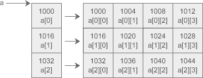
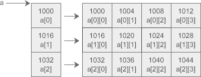

C语言二维数组指针（指向二维数组的指针）详解
二维数组在概念上是二维的，有行和列，但在内存中所有的数组元素都是连续排列的，它们之间没有“缝隙”。以下面的二维数组 a 为例：

C语言中的二维数组是按行排列的，也就是先存放 a[0] 行，再存放 a[1] 行，最后存放 a[2] 行；每行中的 4 个元素也是依次存放。数组 a 为 int 类型，每个元素占用 4 个字节，整个数组共占用 4×(3×4) = 48 个字节。
C语言允许把一个二维数组分解成多个一维数组来处理。对于数组 a，它可以分解成三个一维数组，即 a[0]、a[1]、a[2]。每一个一维数组又包含了 4 个元素，例如 a[0] 包含 a[0][0]、a[0][1]、a[0][2]、a[0][3]。
假设数组 a 中第 0 个元素的地址为 1000，那么每个一维数组的首地址如下图所示：

为了更好的理解指针和二维数组的关系，我们先来定义一个指向 a 的指针变量 p：
对指针进行加法（减法）运算时，它前进（后退）的步长与它指向的数据类型有关，p 指向的数据类型是
数组名 a 在表达式中也会被转换为和 p 等价的指针！
下面我们就来探索一下如何使用指针 p 来访问二维数组中的每个元素。按照上面的定义：
1)
2)
16
3)
4)
根据上面的结论，可以很容易推出以下的等价关系：
int a[3][4] = { {0, 1, 2, 3}, {4, 5, 6, 7}, {8, 9, 10, 11} };
从概念上理解，a 的分布像一个矩阵：0 1 2 3 4 5 6 7 8 9 10 11但在内存中，a 的分布是一维线性的，整个数组占用一块连续的内存：
C语言中的二维数组是按行排列的，也就是先存放 a[0] 行，再存放 a[1] 行，最后存放 a[2] 行；每行中的 4 个元素也是依次存放。数组 a 为 int 类型，每个元素占用 4 个字节，整个数组共占用 4×(3×4) = 48 个字节。
C语言允许把一个二维数组分解成多个一维数组来处理。对于数组 a，它可以分解成三个一维数组，即 a[0]、a[1]、a[2]。每一个一维数组又包含了 4 个元素，例如 a[0] 包含 a[0][0]、a[0][1]、a[0][2]、a[0][3]。
假设数组 a 中第 0 个元素的地址为 1000，那么每个一维数组的首地址如下图所示：

为了更好的理解指针和二维数组的关系，我们先来定义一个指向 a 的指针变量 p：
int (*p)[4] = a;
括号中的*表明 p 是一个指针，它指向一个数组，数组的类型为int [4]，这正是 a 所包含的每个一维数组的类型。[ ]的优先级高于*，( )是必须要加的，如果赤裸裸地写作int *p[4]，那么应该理解为int *(p[4])，p 就成了一个指针数组，而不是二维数组指针，这在《C语言指针数组》中已经讲到。对指针进行加法（减法）运算时，它前进（后退）的步长与它指向的数据类型有关，p 指向的数据类型是
int [4]，那么p+1就前进 4×4 = 16 个字节，p-1就后退 16 个字节，这正好是数组 a 所包含的每个一维数组的长度。也就是说，p+1会使得指针指向二维数组的下一行，p-1会使得指针指向数组的上一行。数组名 a 在表达式中也会被转换为和 p 等价的指针！
下面我们就来探索一下如何使用指针 p 来访问二维数组中的每个元素。按照上面的定义：
1)
p指向数组 a 的开头，也即第 0 行；p+1前进一行，指向第 1 行。2)
*(p+1)表示取地址上的数据，也就是整个第 1 行数据。注意是一行数据，是多个数据，不是第 1 行中的第 0 个元素，下面的运行结果有力地证明了这一点：
#include <stdio.h>
int main(){
int a[3][4] = { {0, 1, 2, 3}, {4, 5, 6, 7}, {8, 9, 10, 11} };
int (*p)[4] = a;
printf("%d\n", sizeof(*(p+1)));
return 0;
}
运行结果：16
3)
*(p+1)+1表示第 1 行第 1 个元素的地址。如何理解呢？*(p+1)单独使用时表示的是第 1 行数据，放在表达式中会被转换为第 1 行数据的首地址，也就是第 1 行第 0 个元素的地址，因为使用整行数据没有实际的含义，编译器遇到这种情况都会转换为指向该行第 0 个元素的指针；就像一维数组的名字，在定义时或者和 sizeof、& 一起使用时才表示整个数组，出现在表达式中就会被转换为指向数组第 0 个元素的指针。4)
*(*(p+1)+1)表示第 1 行第 1 个元素的值。很明显，增加一个 * 表示取地址上的数据。根据上面的结论，可以很容易推出以下的等价关系：
a+i == p+i
a[i] == p[i] == *(a+i) == *(p+i)
a[i][j] == p[i][j] == *(a[i]+j) == *(p[i]+j) == *(*(a+i)+j) == *(*(p+i)+j)
#include <stdio.h>
int main(){
int a[3][4]={0,1,2,3,4,5,6,7,8,9,10,11};
int(*p)[4];
int i,j;
p=a;
for(i=0; i<3; i++){
for(j=0; j<4; j++) printf("%2d ",*(*(p+i)+j));
printf("\n");
}
return 0;
}
运行结果：
0 1 2 3 4 5 6 7 8 9 10 11
指针数组和二维数组指针的区别
指针数组和二维数组指针在定义时非常相似，只是括号的位置不同：int *(p1[5]); //指针数组，可以去掉括号直接写作 int *p1[5]; int (*p2)[5]; //二维数组指针，不能去掉括号指针数组和二维数组指针有着本质上的区别：指针数组是一个数组，只是每个元素保存的都是指针，以上面的 p1 为例，在32位环境下它占用 4×5 = 20 个字节的内存。二维数组指针是一个指针，它指向一个二维数组，以上面的 p2 为例，它占用 4 个字节的内存。
关注公众号「站长严长生」，在手机上阅读所有教程，随时随地都能学习。内含一款搜索神器，免费下载全网书籍和视频。

微信扫码关注公众号